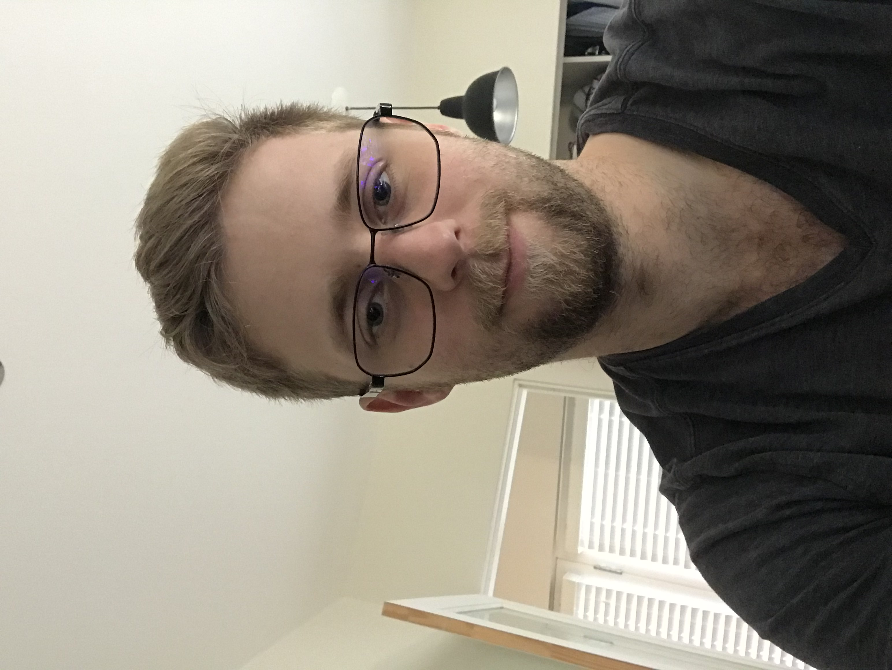

My name is Peter Gibbons. I have many hobbies, and interests, some of which include basketball, golf, gaming, and creative writing. After obtaining my dogwood diploma from Lord Byng Secondary I decided to take a gap year to gain some real-world experience. During this time, I played a lot of golf, wrote some short stories, developed a passion for game development, and worked at HSBC for almost a year and a half. Throughout my day to day activities at HSBC I developed a yearning sensation to go back to school to hone my skills in computer programming with the goal of becoming a game developer. During my search I came across BCIT and found out that they offer a Game Development program, to which the first step to getting in would be by first completing the CIT or CST program. When I came across the description for both the CIT program as well as the Game Development program, I thought to myself “This is exactly what I am looking for” so I sent in my application and thankfully got accepted.
